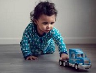
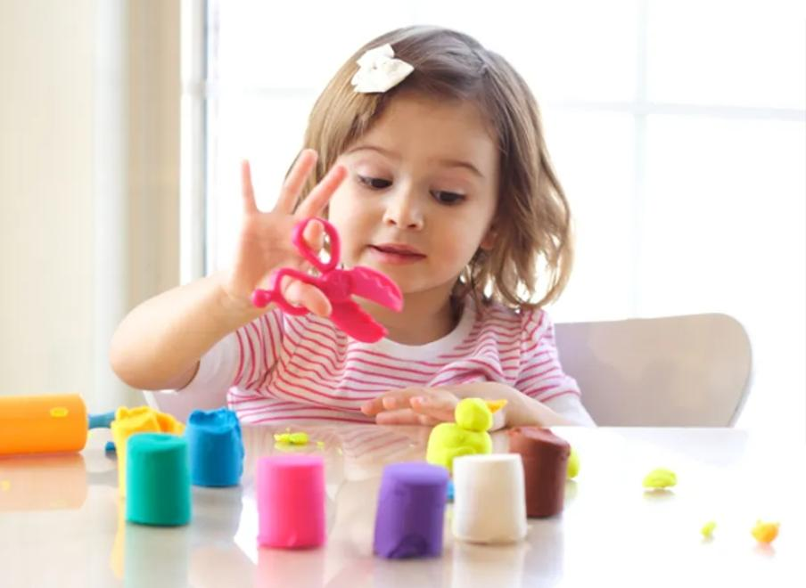
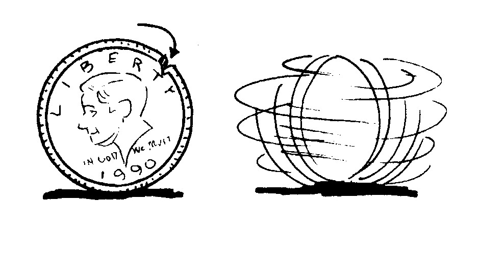
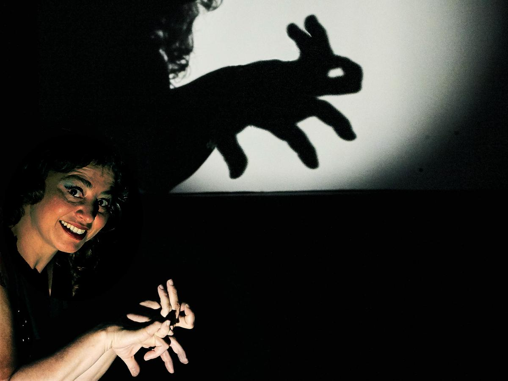
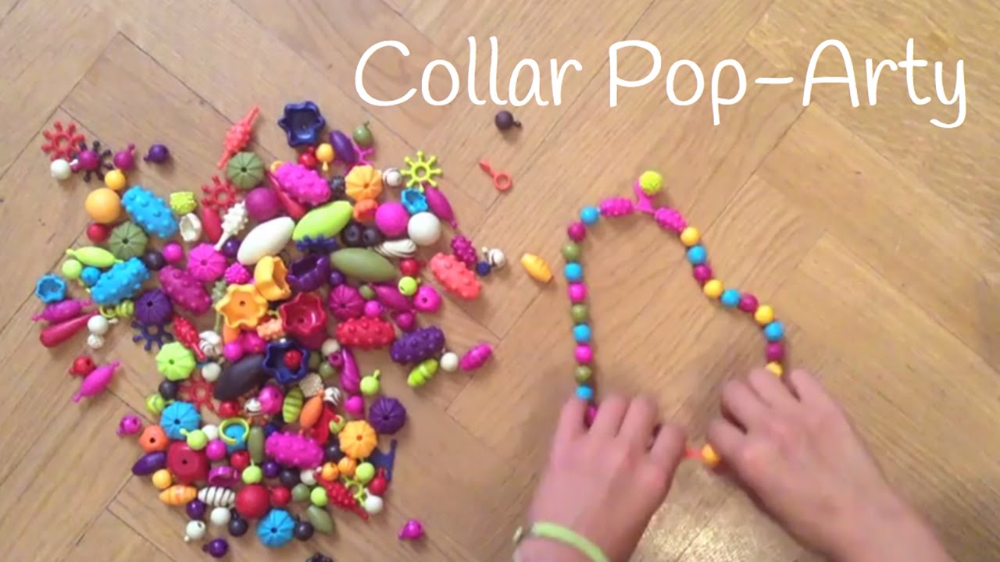
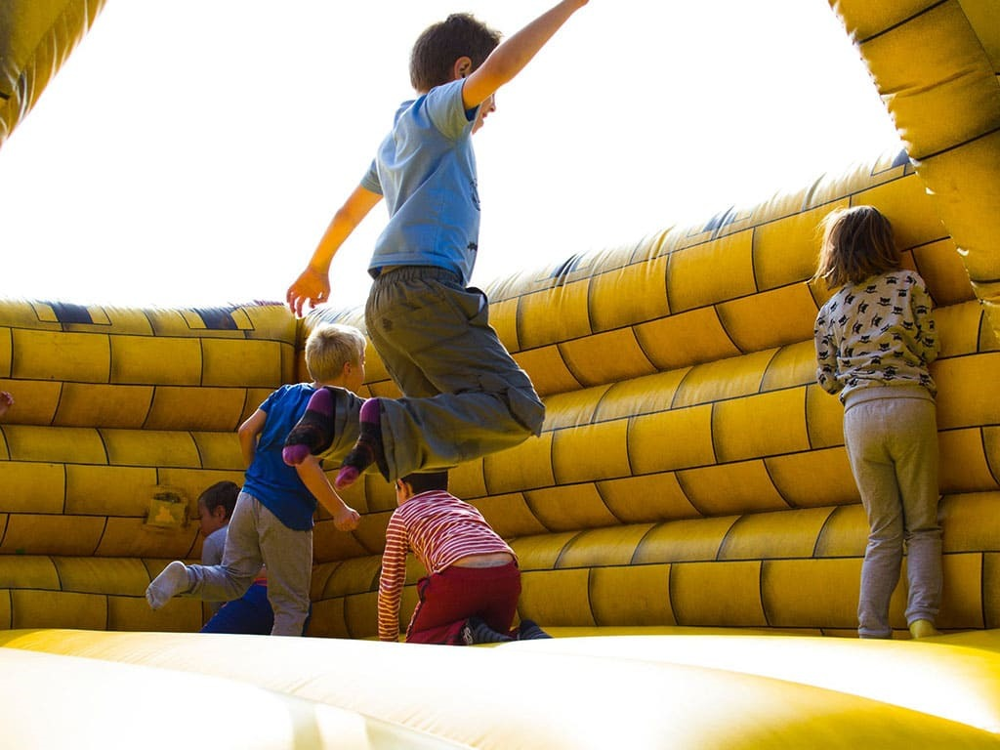

¿Qué es la motricidad?
Es todo aquello que se refiere a movilidad, de los seres y que puedan realizarse a voluntad y es trascendental en el desplazamiento, coordinación, capacidad mental, interacción, desarrollo de habilidades.
¿Qué son motricidades básicas?
Las habilidades motoras básicas son las actividades motoras, las habilidades generales, que asientan las bases de actividades motoras más avanzadas y especificas, como son las deportivas.Correr, saltar, lanzar, coger, dar patadas a un balón, escalar, saltar a la cuerda y correr a gran velocidad son ejemplos típicos de las consideradas actividades motoras generales, incluidas en la categoría de habilidades básicas.
Motricidad fina: desarrollo en niños de 0 a 6 años
¿Qué son las habilidades motoras finas?
La motricidad fina permite la coordinación de los huesos, músculos, tendones y nervios, para que el pequeño pueda realizar pequeños movimientos y precisos. En estos movimientos intervienen en áreas vitales, como el cerebro, la médula espinal, los nervios periféricos, los músculos y las articulaciones. De ahí, la importancia de estimular la motricidad desde el principio.
Aunque parezcan procesos sencillos, debemos saber que, por ejemplo, la mano se encarga de registrar nuestros movimientos neuro psicoemocionales y realiza más de 5.000 micromovimientos. En sus primeros meses de vida, el bebé irá desarrollando el movimiento de las manos hasta conseguir un preciso control de la motricidad fina y alcanzar el considerado acto motor más fino que realiza el hombre: la escritura.
La manipulación que llevan a cabo las manos es la función fundamental en la organización neuromotora, así como en el desarrollo cognitivo, motor, sensitivo, afectivo y relacional del niño.
¿Cómo trabajar la motricidad fina?
Un bebé recién nacido ya realiza algunos movimientos instintivos con sus manos. Éstas suelen estar casi siempre cerradas debido al reflejo neonatal de prensión. Es decir, una contracción refleja de los músculos flexores. Se cree que este reflejo sirve de preparación a la presión voluntaria que se desarrolla más tarde.
Entre los dos y cuatro meses
El bebé empezará a desarrollar la coordinación del ojo con la mano. Es cuando ven un objeto e intentan cogerlo una y otra vez, hasta que, con la práctica, consiguen agarrarlo.
Algunos ejercicios para mejorar la motricidad fina
Moneda giratoria
Sombras chinas
Collares
Motrocidad Gruesa
¿Qué son las habilidades motoras gruesas?
La motricidad gruesa es nuestra capacidad para mover los músculos del cuerpo de forma coordinada y mantener el equilibrio, además de la agilidad, fuerza y velocidad necesaria en cada caso. Hace referencia a los movimientos amplios que engloban varios grupos musculares como el control de cabeza, la sedestación, girar sobre sí mismo, gatear, mantenerse de pie, caminar, saltar, etc.
Etapas de la motricidad gruesa
La evolución del área motora sigue dos leyes psicofisiológicas fundamentales: Céfalo-caudal (desde la cabeza hacia los pies) y próximo-distal (desde el eje central del cuerpo hacia las extremidades). Esto supone que las bases principales del desarrollo motor se asentarán sobre la motricidad gruesa y, posteriormente, podrán evolucionar hacia el desarrollo de la motricidad fina.
Aunque los tiempos de adquisición de los distintos hitos evolutivos son individuales y dependen en gran medida de las características biológicas y ambientales de cada persona, podemos establecer diferentes fases en el desarrollo motor:
- • De 0 a 3 meses: Puede girar la cabeza de un lado a otro, y comienza a levantarla, empezando a sostenerse por los antebrazos.
- • De 3 a 6 meses: En esta etapa empieza a girar su cuerpo.
- • De 6 a 9 meses: Se sienta independientemente y se inicia en el gateo.
- • De 9 a 12 meses: Empieza a gatear para moverse y comienza a trepar.
- • De 12 a 18 meses: Comienza a dar sus primeros pasos y a agacharse.
- • De 18 a 24 meses: Puede bajar escaleras con ayuda y lanzar pelotas.
- • De 2 a 3 años: Corre y esquiva obstáculos. Empieza a saltar y caer sobre los dos pies.
- • De 3 a 4 años: Es capaz de balancearse sobre un pie y salta desde objetos estables, como por ejemplo escalones.
- • De 4 a 5 años: Da vueltas sobre sí mismo y puede mantener el equilibrio sobre un pie.
- • 5 años y más: El equilibrio entra en su fase más importante y se adquiere total autonomía motora.
Como vemos, el desarrollo de la motricidad gruesa en la etapa infantil es de vital importancia para la exploración, el descubrimiento del entorno, la autoestima, la confianza en sí mismo y resulta determinante para el correcto funcionamiento de la psicomotricidad fina más adelante.
En relación a esto, los últimos datos sobre neuroaprendizaje aportan importantes conclusiones sobre la influencia del desarrollo motor en las dificultades atencionales y de aprendizaje. Un buen ejemplo de ello lo encontramos en la importancia del gateo. Mediante el acto de gatear, los niños y niñas desarrollan habilidades visuoespaciales, experiencias táctiles, integración bilateral, orientación, adquieren la lateralidad y el patrón cruzado estableciendo importantes conexiones entre los hemisferios cerebrales, además de estimular el sistema vestibular y propioceptivo. Todos estos aspectos resultan primordiales para el desarrollo de las funciones cognitivas y se encuentran especialmente relacionados entre sí en un momento concreto: la adquisición de la lectoescritura.
INSTITUTO SUPERIOR TECNOLOGICO TSA’CHILA
TECNOLOGIA EN DESARROLLO INFANTIL INTEGRAL
Tema:
Sitio Web
Autor:
Karina Andi
Tutor:
ING. Cristian Escobar
Asignatura:
TICS
Nivel:
"1"